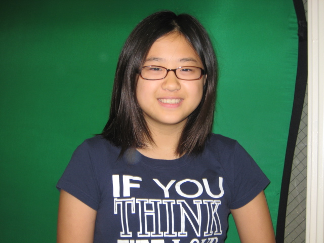

I AM DAHEE. HELLO.

I'm a design technologist,
design strategist,
and community organizer.
That means that I make stuff through coding and technology, I plan the best way to design things,
and I help communities accomplish goals and voice opinions through events, campaigns,
protests, workshops, and any other way that best suits the community.
I love to explore new ways to teach, learn,
and research through activist research, participatory design, and community outreach.
I got my BFA in Design and Technology at Parsons School of Design, and I'm a fabulous graduate of the COVID-19 class (May 2020).
If you want to see my resume, learn more
about me, and/or recommend me a book to read, please email me or DM me at @ reyreybinks on instagram.